Perspective Pipe Optical Illusion
2011-11-27T14:23:49Z
Not much can be said about the impossible pipe below. I don’t know who found it, revealed it’s existence nor took the showcased photo of it. Yet what I CAN tell you is that the illusion works great! The trick is obvious, and the perspective optical illusion works flawlessly. Still, if some of you know the original source and author, be sure to ping me so I can update the post with appropriate credits. Enjoy!

Hollywood’s War Time Illusions
2011-11-24T11:19:18Z
These days Hollywood has a bad reputation for being filled with some of the most unpatriotic people in America, but back in World War II, things were a lot different. In fact, between their celebrity-filled war bond rallies and moral-boosting films, Hollywood played a huge role in driving support for the war effort.
But while those efforts were pretty well known, the studios also played a much more covert role in keeping America safe -by disguising some of the nation’s largest aircraft plants to look like residential neighborhoods. The images featured here are all from The Lockheed-Vega aircraft plant in Burbank (seen at left before the camouflage was applied and below afterwards), although these techniques were used on multiple military locations.
It all started when Colonel John F Ohmer, a leader in camouflage technology, suggested that the U.S. create a protective cover on a major air base outside of Pearl Harbor. His superior officers ignored his idea, but when the Japanese attacked on December 7, 1941, his camouflage concept suddenly seemed like a really great idea.
Of course, one man with a great plan couldn’t handle this type of task on his own, but the plan was made possible when Hollywood studios, including Metro-Goldwyn-Mayer, Disney Studios, 20th Century Fox, Paramount and Universal Pictures all volunteered their services.
Scenic designers, painters, art directors, landscape artists, animators, carpenters, lighting experts and prop men were suddenly using their unique talents not to create movie sets, but whole imaginary towns on top of existing military installations.
Entire suburbs were painted on canvas and adorned with rubber cars and feather trees to provide a more realistic look. Factory air ducts that stuck out of the canvas were disguised to look like fire hydrants.
Of course, a real suburb would never stay still all the time, so to add even more realism to the scene, workers would climb along support beams and move the cars up and down the imaginary streets. They would take laundry off of the clothes lines and then put them back up later.
If these installations were put up anywhere aside from Southern California, they would not only suffer without the skill of the Hollywood effects teams that helped create them, but they would likely also fall victim to the weather. Southern California, known for its moderate climate, provided an environment free from snow and heavy-rain, that would have otherwise destroyed these clever camo designs.
Unbeknownst to the U.S. at the time though, by the time these elaborate designs were completed in October 1942, Japan was already too weak to launch an attack against mainland America, so in the end, these elaborate ruses served little purpose in the actual war effort. Even so, they are an amazing part of military history, showing just how convincing camouflage can be in the right hands.
Of course, these techniques wouldn’t serve much purpose these days with all of our modern detection devices. But at the time, clever illusions were able to play an important role in the protection of the Allied forces. Be sure to follow the mentioned link for more military-used optical illusion tactics.
What is This?
2011-11-22T03:58:06Z
Getting the answer to the question presented before you is a lot harder than you may originally perceive. Still, if I helped you out with some additional fun-facts, you might actually have a chance at cracking this. So, what we you should know is that the author behind this installation is Markus Raetez, person responsible for YES/NO ambiguous sculpture we featured recently. Markus has a great talent for ambiguous art, and also loves making a reference to every-day items in his creations. Playing around with Moillusions way of tagging and lurking file-names is a big no-no. It might help, but this would mean taking a shortcut, and we all know you can do better than that. If none of this helped, you might as well expand and reveal the solution anyway – like I care. But it would be interesting to learn if some of you actually came to conclusion on their own! (PS checking above hyperlinks might provide additional hint or two ;)
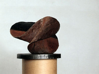
Click To Expand The Solution!
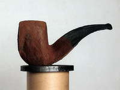
Impolite Optical Illusions Gallery
2011-11-20T03:09:50Z
I receive over a dozen illusion submissions each day, and sometimes these submissions include somewhat “edgy” content. The problem is, they often work really well – sometimes even too well to be precise! Then it comes to me to decide how should I handle this situation most precociously.
Even though I may endorse such optical illusions that ONLY imply NSFW content (while in reality being perfectly safe), I still wouldn’t want them showing inside your desktop widgets and gadgets, potentially bringing you in awkward situation of some sort. Thus, I have decided to place this simple, non-related socket illusion (above) to have something to fill your gadget with. Before you start complaining how these might lack taste, I can assure you the illusions they hold work really great! Hope you like what you’re about to see inside this article! Looking forward reading your comments.
Oleg Shuplyak’s Illusory Paintings
2011-11-15T23:54:36Z
As it has been confirmed over and over again, sometimes there is much more to the eye than you can initially perceive. This specially goes for the items that have been featured on Mighty Optical Illusions website. Today’s featured artist comes from Ukraine, and is widely recognized because of his illusory oil paintings. His name is Oleg Shuplyak. The gallery you’re about to see hides a surreal world once you take a look at it more closely. Through carefully placed objects, characters, coloring and shadows, there is a second image in the painting which creates an optical illusion.
I’m not sure whether this artist was more influenced by Sandro Del Prete’s opus or works done by famous Octavio Ocampo, but those of you following this website for some time will immediately notice the resemblance! Just like Sandro, Oleg’s works usually feature a portrait of famous personalities. Go through the gallery below and see how many of them can you recognize. Van Gogh, Sigmund Freud and Salvador Dali are just few among dozens.
With works like these, it’s sometimes hard for the author to balance the weight of both images. Personally, I’m more fond of illusions where the “constructed”, 2nd image is more subtile. Oleg on the other hand, does quite opposite – The second image is so easily observable in some paintings, that you can actually miss the first one consisting of harmless landscape or characters in different settings. What you have to do then, is observe the painting more closely to actually see the initial setting and not concentrate on the faces. True skill of such artist is then evaluated by the fact how well did he construct the illusion, and whether the parts of landscapes constructing the illusion have useful part in the original setting. Artists often trap themselves by forcefully adding elements needed to construct the illusion, which don’t actually play their part well in the original setting. In my opinion, Oleg has mastered the technique just like Sandro did, and each part in his paintings seamlessly works in both images, the first “apparent” one, as well as the “hidden” illusory one. So, how many faces did you recognize? Which of his paintings did you like the most?


Sideway Face Optical Illusion
2011-11-12T20:18:43Z
Here’s a disturbing photo-manipulation that has been circulating Facebook for some time now. I couldn’t ignore all the requests for it to be featured no more. It’s like more than a dozen of you have submitted it to me over the last week. At first I wasn’t that impressed, but as I kept re-checking the pic each time someone re-sent it to me, finally have I seen the illusion! Even-though this photo has been heavily manipulated, the illusion stands perfect! So, what do you make of it? Do you see the man standing sideways (profile), or do you see it as a partial frontal shot (a portrait)? It works both ways! Perhaps them police officers in charge of taking mug-shots of criminals could re-think their practice and go with this new approach to save film :D Something similar we have already featured before, but this one works much better, I think! BTW another take on this illusion can be seen inside this article (if you read this off of homepage).
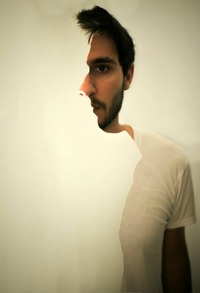
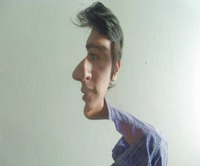
Troxler’s Fading Optical Illusion
2011-11-08T19:11:29Z
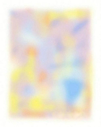Here and then I feel like having a burden of “responsibility”, where I remind myself it would be irresponsible if I didn’t al least provide occasional education, specially when there are so many young-ones among us, whose minds are still forming and thirsty for knowledge! Before I explain the science behind this interesting phenomenon called Troxler’s Effect, let me show you an example you can experience yourself! Look at the blurry image on your right. Now stare at the center of the image, and at the same time try not to blink. After a moment or two, image will disappear, thus showing you how this article would look like if there was no image attached to it!
Now let’s try and explain the science behind this: Troxler’s Fading or Troxler’s Effect is a phenomenon of visual perception you have just experienced moments ago. When one fixates a particular point, after about 20 seconds or so, a stimulus away from the fixation point (in peripheral vision) will fade away and disappear. The effect is enhanced if the stimulus is small, of low contrast, or blurred. It works best the further the stimulus is away from the fixation point.
Troxler’s fading was first discovered by Ignaz Paul Vital Troxler, back in 1804. It is part of the general principle in sensory systems that an unvarying stimulus soon disappears from our awareness. Here’s a fun experiment you can try yourself: place a small piece of paper on the inside of your forearm. You can feel it for a few seconds, but then the sensation is no longer present. This is because the tactile neurons have adapted. Now, if you jiggle your arm up and down, giving varying stimulation, you will continue to feel the paper until it falls off! Similar fading can be seen of a fixated stimulus when its retinal image is made stationary on the retina, a stabilized retinal image. One can induce an afterimage, usually by an intense, brief flash, such as when one is photographed using a photographic flash. 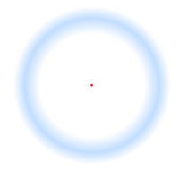
This causes an image to be bleached onto the retina by the strong adaptation of the rods and cones. In all these cases, the stimulus fades away after a short time and disappears. Troxler’s fading can occur without any extraordinary stabilization of the retinal image in peripheral vision because the neurons in the visual system beyond the rods and cones have large receptive fields. This means that the small, involuntary eye movements made when fixating something fail to move the stimulus onto a new cell’s receptive field, giving unvarying stimulation. One of the more famous examples we covered in the past was Lilac Chaser. Be sure to check Disappearing Effect category for many more examples of Troxler’s Effect!
Gorgeous Clown Optical Illusion
2011-11-04T14:56:06Z
There are some optical illusions that simply become viral over night, and jump at you from all across the web in matter of days. Most of the time they contain “juicy” NSFW content, which I’m not in the position to share via our homepage, as we wouldn’t want to spoil them youngsters visiting this site often. On the other hand, those kind of illusions would probably appear problematic sitting on your desktop, embedded right inside our optical illusion widgets. Luckily, there is a solution – as you know we successfully run dedicated and popular Mighty Optical Illusions fan page on Facebook, where you are free to check those “edgy” illusions that we haven’t found place for on our homepage. Moreover, here on moillusions.com I bring you daily illusions (more or less), but if you are subscribed to our Facebook channel, you have the opportunity to see (or even submit) extra illusions in much shorter time span. Check out the 3 or 4 new illusions me and my fans posted since our last post on this site!
For today’s illusion, just stare at the nose of this gorgeous clown below. Try not to blink nor move your eyes for 30 seconds. Then quickly more your eyes over the white surface (ordinary wall will do fine, or use the provided white space below), and start blinking obsessively! What do you see? Hope you liked this afterimage as much as I did! Thanks goes to Mathieu and Mauro for sending this!
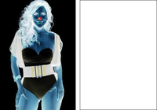
Saxophone Player Optical Illusion
2011-10-30T06:44:55Z
Art done by American artist Donald Rust “Rusty” is already well recognized within our optical illusion community (The Hidden Tiger!). It’s actually quite strange we haven’t already featured this one below, as it stands as one of Rusty’s more prominent works. Depict below, a romantic scenery includes it all – an idilic porch, a swan, mountains in a distance and an intimate moment shared by young couple. But wait! Is the scenery truly intimate? If you look better you will see there is an intruder present! Actually when you find him, you’ll realize “intruder” might be too strong of a word for him. The man instead excellently contributes to the whole moment. He even masked himself not to distract the young couple. Well done Rusty, well done!
Incredible Paintings of Vintage Photos That Are Optical Illusions
2011-10-23T20:39:45Z
If you ask yourself why I have decided to feature some “ordinary vintage photos” on an optical illusions blog, think again. Work below is just a fraction of Spanish artist Paco Pomet’s portfolio. If you inspect the photos more closely, you’ll soon realize they’re in fact stunning oil paintings that are “just” a reproductions of vintage photographs. Not only do the works use a monochromatic palette and photo real style (which in itself I find quite impressive!) — but each of Pomet’s paintings includes something out of the ordinary that isn’t always recognizable at first glance. His illusions transform the vintage photos into something quite unexpected. What he does, he changes real people and places into surreal landscapes and portraits by tweaking tiny details that go unnoticed at first. Some end up more illusory that others, and these few I have decided to showcase. How long does it take before you discover hidden oddities? For more of Pomet’s incredibly detailed, well-rendered works, check his official homepage.
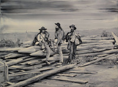
S.W.A.T. Team Optical Illusion
2011-10-18T23:06:00Z
I always wondered how U.S. security/intelligence system works. More importantly, how functional in practice inter-agency cooperation and information exchange really is – specially when there are like gazillion of them… Who coordinates them? Which one acts as roof on top of them all/is its name publicly known at all? I’m sure some of our millions of US visitors have insight into this stuff and would care to explain, at least what they’re allowed to, anyway. What I’m even more interested in, which of the many open-source cypher tools used to encode files are actually impenetrable (at least for now)? Potentially, which of the higher end (non-linear) encryption tools are “safe”, thus can’t be broken by mere use of brute force (by mega capable clusters of computers governments own)? How many of them are proven to lack back-door access?
Now, I wouldn’t want to draw any unnecessary attention, asking all them security questions (lol), yet young engineer-problem-solver minds are always curious and strive for knowledge in diverse fields :D Having such a big audience can actually be a mighty tool – just like that time we got insight into Free Masonry, which basically translates to networking/philanthropy brotherhood for what I could sum it up to(?). Anyhow, sorry for pulling you off the illusion course for a moment – won’t happen again… So, can you decide which of the police officers below is the biggest? You might be surprised what comes out of it, specially if you own Photoshop or some tools to inspect…
Optical Illusion Cow
2011-10-15T23:14:00Z
There was this cow… everybody knew she was special, but no one could say why. She wasn’t particularly good at math, she didn’t produce world’s best milk, she didn’t have any connection with world’s most famous chocolate brand to push her in showbiz, yet even in her early days she showed great talent for optical illusions! This was the category she truly conquered. Even further, she brought great joy to everyone she met. Can you see why she is so special? If you have no clue whatsoever, you may want to check her distant relative first – obviously the talent runs in her family!
Cigarettes and Buildings Illusion
2011-10-11T15:48:25Z
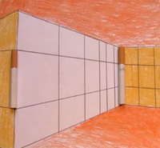Hardly a week has passed since we last featured one of the Greeenpro’s creations, more specifically – Dots in Motion optical illusion video. No matter the short time span, we already received two new excellent illusions from the same author! For example, check these two cigarettes on your right – just by looking at the picture, which one would you say is bigger? Are you sure?
Same goes for the three L-Shaped objects below: there are at least 2 L-Shaped roofs on below buildings that are exact same in size. Which ones are they?
To see the solution, expand the hidden explanatory pictures after the jump, and be sure to see Greenpro’s original videos explaining the illusion here. Both illusions are just a variation of something we’ve already seen at some point before, yet after seeing these many times, amazingly they still work – at least for me they do.
Click To Expand The Solution!
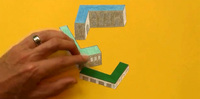
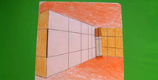
“Open Box” Art Installations
2011-11-25T11:30:37Z
When is an open box more than just a piece of cardboard? When it’s part of Krystina Naylor’s fantastic Open Box art installation featured at the Saatchi Gallery in London. Yes, at first glance, these may look like a boring old cardboard boxes that you might use to move your home possessions in, but they are actually completely functionless sculptures designed purely to manipulate the way you observe objects around you.
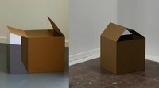When you walk around the “boxes” and view them from another angle, you quickly realize that Krystina Naylor took two uniquely shaped sculptures and then painted them to perfectly match their surrounding locations in the gallery so they appear as boxes when viewed from the right angle.
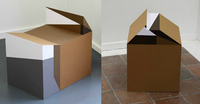And that’s when you realize that these plain cardboard boxes are actually clever works of art that examine the viewer’s perception of the world they live in. And isn’t that what all good art is supposed to accomplish?
Ever Wondered How Liu Manages to Disappear? Here’s How!
2011-11-23T04:50:55Z
Seems we have caught Liu off-guard in those rare moments he wasn’t paying too much attention. In this shocking, revealing photos you will see Liu Bolin as an ordinary man he really is – for example: smiling as he prepares to demonstrate another camouflage art installation, where he’s gonna blend in with all sorts of vegetables displayed on the shelves at a supermarket in Beijing. More important, it seems we have finally revealed his “so called” disappearing act, as well as learned how Liu actually looks like in person when he is not hiding from us. Check the below exclusive evidence of assistants assisting Liu in his witchcraft! Still, there is some good left in Liu – did you know he has started his optical illusion artworks of becoming ‘invisible’ more than six years ago, while describing them as a form of political protest and his way of ‘hiding from the authorities‘?
Artist Liu Bolin smiles as he prepares to demonstrate an art installation by blending in with vegetables displayed on the shelves at a supermarket in Beijing November 10, 2011. Liu, also known as the Vanishing Artist, started practising being invisible by means of optical illusions more than six years ago.

You’ve probably seen most of Liu’s camouflage installations, but just in case you missed some – click on the image below and browse our #Liu Bolin archive:
Sinking Volkswagen Installation
2011-11-21T03:36:56Z
Laura Jani discovered what seems to be an art installation done by Spanish artist Ivan Puig titled “Hasta la Narices”. If you google for a translation you’ll soon discover it means something similar to “Fed-up”. What is obvious from these shots below, the installation features a “sinking” VW sedan – which in reality is all but that. Update: Laura has also provided this spoof on Puig’s installation, a version that features her own sinking banana. Interesting approach to art, I must say…
Flying Carpet Optical Illusion
2011-11-19T02:14:55Z
What do Soviet spies, meditating Yogis, random “cool dude” and Johan Lorbeer have in common? Well, it appears each one of them has mastered the skill of levitation! Today another young lady has joined their league. It appears her speech required so much attention and concentration she didn’t even notice when she got her carpet rise off of ground. Simply amazing!
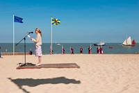
Imaginary Spiral Optical Illusion
2011-11-14T18:49:48Z
James Thomas Fields has created a very strong optical illusion effect, which gives the illusion of appearing and disappearing spiral lines. Just look at the pattern James originally shared via our FB channel. First time you look at it, there is a big chance you won’t go into details. Now if someone hid the picture from you after a moment and asked from you to describe what you have just seen moments ago, your answer would probably end up something like this – “I think it showed a spiral that narrowed down to a central white spot. At the same time the spiral was covered with some kind of ying-and-yang overlaying pattern.” Even though not far from truth, the real deal is that there were no actual spirals present at all! Now if you look at the picture once again, and try and focus on the seemingly present spiral lines, you’ll soon discover there really aren’t any… Good job James!
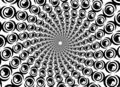
Impossible Atomium Sculpture
2011-11-09T16:09:13Z
Before I begin with today’s optical illusion, let me ask you something that has been over my head for the last couple of days. Those of you familiar with our Chrome plugin (one that features daily optical illusions in your Chrome browser), might actually provide me with needed information. It seems as of recently (for the last couple of days, to be precise) people started downloading the plugin like crazy. Don’t get me wrong, there’s nothing wrong with it – it’s just that I noticed huge spike in installs, which I can’t explain. I suspect the plugin was featured or recommended somewhere, yet I can’t seem to learn where. So my question is this: if you found this site in the last couple of days through our chrome plugin, can you share where did you learn of it before you installed it? How did you stumble upon our “Optical Illusion of The Day” Chrome plugin? Did you saw it featured somewhere like Chrome Store homepage or something? This info would really help!
Onto the illusion now! The strange Atomium-like impossible object below was created by Pawel Hynek in 2006. I bet you would have hard time constructing something similar on your own! After a while you get used to the idea this thing can’t exist on it’s own, and how it was probably brought to life in digital environment. Never the less, I admire the hyper-realistic result Pawel achieved. Does it remind you of a famous Brussels Atomium monument (this one)? BTW: The Atomium monument was originally built for Expo ’58 (1958 Brussels World’s Fair). Designed by André Waterkeyn, the monument consists of nine steel spheres connected so that the whole forms the shape of a unit cell of an iron crystal magnified 165 billion times!! The sculpture stands 102 meters (335 ft) tall.
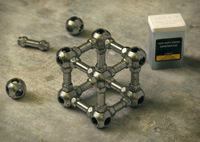
Then and Now Photo-Fusion
2011-11-06T14:04:00Z
We’ve all taken trips down memory lane, but rarely does that involve an actual lane and memories of other people like the University of Florida’s UF, Then & Now project. The concept involves using photographs of people taken from throughout the last 100 years, by lining them up with the place they were taken and then taking another image to capture the changes between the time periods.
In the end, the images are not only a great way to document all the ways the school has changed in the last century, but also to thank the students, faculty and administrators who allowed it to grow. For many of the people pictured, it might also be the only way they can visit their Alma Mater during Homecoming season one last time.
While the project is of particular interest to those with ties to UF, I think we can all appreciate the artistic merits of the photos…even if they aren’t technically illusions. For more pictures and information on how the school has changed over the years, be sure to visit the homepage of the UF, Then & Now project.
Have any of you ever tried to make your own then & now photographic projects? I’ve always wanted to, but have never had the time to set up the shots just right.
Liu Bolin Has Disappeared!
2011-11-01T11:09:30Z
We’ve featured lots of Liu Bolin’s camouflage paintings before, but that’s just because his talent is so incredibly impressive! I believe there is no reason to ever stop posting such amazing illusory installments when they come out. In my own opinion, some of Liu’s best works include tractor image, dragon series and the camouflage cans illusion because in all of these pictures, Liu appears practically invisible to untrained eye. No matter which of his works are your favorite though, it’s hard to deny the skill necessary to produce these. Specially once you get the chance to glaze through his newest series:
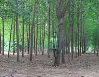
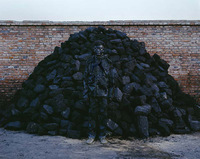

Which one’s your favorite? Do you ever have a hard time finding the person in the pictures?
Vintage Quaker Oats Puzzle
2011-10-27T00:21:52Z
As seen on Deceptology blog, company called Quaker Oats published an interesting advertising booklet way back in 1895. This vintage booklet contained 25 nursery rhymes, but more importantly there was a DIY optical illusion puzzle printed on its front cover. Might be interesting to know this item is now sold as vintage collectable (also known as “advertising ephemera”). But let’s jump straight to the point – How many packages can you count? Are there 6 or 7 or 14 packages present? What happens if you turn the puzzle upside-down? Anyone volunteers to explain? If you wish, you can also print it, cut a hole in the middle and put a pencil through it, making it interactive in real world. Who knows, maybe this little curiosity would represent a fun distraction for you and your school buddies. Anyway, when you solve this one – head next to somewhat more complex puzzles. One involves a mad scientist and his soccer team, and the other missing eggs and boulders!
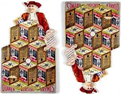
See Your Little Ones Grow!
2011-10-20T23:27:48Z
I have just received this optical illusion from my former classmate – it’s a promotional poster for some sort of product called Horlicks. I’m not gonna tell you what the the illusion here really is, as I have confidence you’ll manage to spot on your own. I’m sure you will find it sooner or later. Yet, there is a chance you won’t like it as much as I did (which is mostly because it managed to fool me when I first saw it). The only hint I can give you is this: if you think you’re seeing a hand holding a magnifying glass, think again! BTW, I was surprised how no one answered my earlier question :( !?
365 Days of Face Painting
2011-10-16T19:08:48Z
What was your New Year’s Resolution? Do you even remember? And if you do, have you even bothered to follow through with it?
Research shows that only 12% of people actually follow through with their resolutions and complete the goals they set for themselves at the beginning of the year. Everyone else gives up at some point in the year, often before January even runs out.
Fortunately, artist James Kuhn is one of the dedicated 12% who actually completes his goals. And his goal is something we can all enjoy. In 2008, he challenged himself to create a new face painting every day and then photograph them and upload them to his website. Even after the year was over, James kept working on his art project, although not at such a fervent pace. These days, he has over 2000 images on his Flickr stream, most of which are face paintings.
These aren’t your every day spider-on-the-cheek-face paintings, these are elaborate and artistic body paintings that took hours to prepare. The results speak for themselves. In fact, Vurdlak already unknowingly posted some of this artist’s work on the site before. BTW – Let me just warn you that some of the Kuhn’s face paintings in below gallery turned out somewhat disturbing!
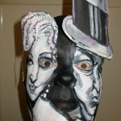


Yes or No? Make Up Your Mind!
2011-10-13T21:12:01Z
Originally discovered and submitted by Hans Von Mulders ***man, I’d kill for having aristocratic Von in my name!***, an incredible ambiguous sculpture you’re about to see was produced by artist called Markus Raetez. What from one angle looks as YES, completely changes in meaning and shape if you look at it from a different angle. So is it YES or NO in the end? Or maybe it’s both! Make up your mind, already!
If these kind of installations ring a bell, you’re right – artists like Guido Moretti and late Shigeo Fukuda experimented heavily with similar kind of ambiguous forms. If you haven’t already, be sure to check Underground Piano from Fukuda and Guido Moretti’s works of art. Let me show you how it works below:
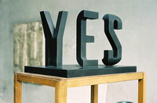
Update: It appears the illusion works flawlessly in other languages to! First two appear to be Spanish and French versions, while I can’t seem to work out the last one on the right? Is it Klingon?
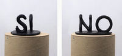